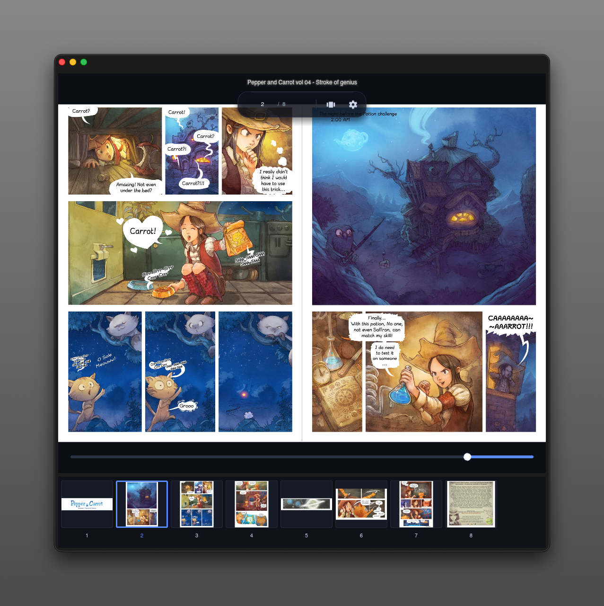

<!doctype html>
<html lang="ja">
  <head>
    <meta charset="UTF-8" />
    <meta name="viewport" content="width=device-width, initial-scale=1.0" />
    <title>gashuu - Fast, elegant manga / comic reader</title>
    <meta name="description" content="gashuu is a fast, elegant manga / comic reader for immersive viewing." />
    <script src="https://cdn.jsdelivr.net/npm/@tailwindcss/browser@4"></script>
    <script crossorigin src="https://unpkg.com/react@18/umd/react.production.min.js"></script>
    <script crossorigin src="https://unpkg.com/react-dom@18/umd/react-dom.production.min.js"></script>
    <script src="https://unpkg.com/@babel/standalone@7/babel.min.js"></script>
    <style type="text/tailwindcss">
      @theme {
        --font-sans: Inter, ui-sans-serif, system-ui, -apple-system, BlinkMacSystemFont, "Segoe UI", sans-serif;
        --color-ink: #111116;
        --color-paper: #fffaf0;
        --color-manga: #f2e7cf;
        --color-sumi: #1b1a18;
        --color-vermilion: #f35f3d;
        --color-matcha: #95b46a;
      }
      @utility soft-shadow { box-shadow: 0 24px 80px rgba(32, 23, 10, .14), 0 4px 18px rgba(32, 23, 10, .08); }
      @utility grid-bg { background-image: radial-gradient(rgba(17,17,22,.08) 1px, transparent 1px); background-size: 22px 22px; }

      /*
        Typography system
        - Base: 17px
        - Fibonacci anchors: 13 / 21 / 34 / 55 / 89
        - Golden-ratio rhythm: 1.618rem vertical units, compact display leading
        - 2026-06 revision: hero max reduced by 50%, hierarchy rebalanced around it
        - 2026-06 revision: hero vertical gaps set to 55 / 55 / 34 / 21px rhythm
        - 2026-06 revision: hero copy changed and headline top/bottom spacing doubled to 110px
        - 2026-06 revision: removed hero badges; widened lead copy to Fibonacci 55rem\n        - 2026-06 revision: reading-flow intro spacing set to 34 / 55 / 89px rhythm
      */
      @layer base {
        html {
          font-size: 17px;
          text-rendering: geometricPrecision;
          -webkit-font-smoothing: antialiased;
          -moz-osx-font-smoothing: grayscale;
        }
        body {
          line-height: 1.618;
          letter-spacing: -0.006em;
        }
      }

      @layer utilities {
        .type-kicker {
          font-size: clamp(0.72rem, 0.69rem + 0.12vw, 0.82rem);
          line-height: 1;
          letter-spacing: 0.13em;
          text-transform: uppercase;
        }
        .type-nav {
          font-size: clamp(0.82rem, 0.79rem + 0.10vw, 0.94rem);
          line-height: 1.2;
          letter-spacing: -0.01em;
        }
        .type-hero {
          /* Tuned to keep the short Japanese hero copy on one line on desktop. */
          font-size: clamp(2rem, 1.42rem + 2.2vw, 3.4375rem);
          line-height: 1.02;
          letter-spacing: -0.048em;
          font-weight: 950;
        }
        .type-section {
          /* Hero / φ ≒ 2.5rem, nudged to 2.62rem for Japanese display clarity. */
          font-size: clamp(1.62rem, 1.24rem + 1.35vw, 2.62rem);
          line-height: 1.08;
          letter-spacing: -0.044em;
          font-weight: 930;
        }
        .type-subsection {
          font-size: clamp(1.31rem, 1.18rem + 0.55vw, 1.62rem);
          line-height: 1.16;
          letter-spacing: -0.032em;
          font-weight: 900;
        }
        .type-card-title {
          font-size: clamp(1.00rem, 0.96rem + 0.18vw, 1.13rem);
          line-height: 1.24;
          letter-spacing: -0.022em;
          font-weight: 850;
        }
        .type-lead {
          font-size: clamp(1.00rem, 0.96rem + 0.20vw, 1.13rem);
          line-height: 1.618;
          letter-spacing: -0.014em;
        }
        .type-body {
          font-size: clamp(0.94rem, 0.91rem + 0.12vw, 1.00rem);
          line-height: 1.62;
          letter-spacing: -0.004em;
        }
        .measure-phi {
          max-width: 38.2rem;
        }
        .measure-copy {
          /* Wider lead measure: 55rem Fibonacci anchor, balanced against the one-line hero. */
          max-width: 55rem;
        }
        .rhythm-13 { margin-top: 0.8125rem; }
        .rhythm-21 { margin-top: 1.3125rem; }
        .rhythm-34 { margin-top: 2.125rem; }
        .rhythm-55 { margin-top: 3.4375rem; }
        .rhythm-89 { margin-top: 5.5625rem; }
      }
    </style>
  </head>
  <body class="bg-paper text-ink antialiased selection:bg-vermilion selection:text-white">
    <div id="root"></div>

    <script type="text/babel">
      const { useState } = React;

      function Badge({ children }) {
        return <span className="type-kicker inline-flex items-center gap-2 rounded-full border border-black/10 bg-white/70 px-3 py-1.5 font-bold text-black/70 backdrop-blur">{children}</span>;
      }

      function Button({ children, variant = 'primary', href = '#download' }) {
        const base = "type-nav inline-flex items-center justify-center rounded-full px-5 py-3 font-black transition hover:-translate-y-0.5 active:translate-y-0";
        const styles = variant === 'primary'
          ? "bg-ink text-white shadow-xl shadow-black/15 hover:bg-black"
          : "border border-black/10 bg-white/70 text-ink backdrop-blur hover:bg-white";
        return <a href={href} className={`${base} ${styles}`}>{children}</a>;
      }
      function MockViewer() {
        return (
          <div className="mx-auto w-full max-w-6xl">
            
          </div>
        );
      }

      const features = [
        ['STEP 1', '本を入れる', 'フォルダもCBZ/ZIP/CBR/RARも。中身を見て判定し、自然な順番で本棚へ。'],
        ['STEP 2', '読み方を合わせる', '単ページ/見開き/Auto、RTL/LTR、フィット。作品ごとの読み味を記憶します。'],
        ['STEP 3', '続きへ戻る', '進捗、最近読んだ本、最後のページ。次に開けば、昨日の位置から再開できます。'],
        ['FIND', 'ページを探す', 'サムネイル、スクラブ、ページカウンターで、長い巻でも読みたい場面へすぐ移動。'],
        ['FAST', 'テンポよくめくる', 'LRUキャッシュと近傍ページのプリロードで、ページ送りの待ち時間を減らします。'],
        ['SAFE', '安全に読む', '巨大画像や壊れた項目は事前に検知。クラッシュではなく、状態として知らせます。']
      ];

      function App() {
        return (
          <div className="overflow-hidden">
            <header className="fixed inset-x-0 top-0 z-50 border-b border-black/5 bg-paper/80 backdrop-blur-xl">
              <nav className="mx-auto grid max-w-7xl grid-cols-[1fr_auto_1fr] items-center px-5 py-4">
                <a href="#" className="flex items-center gap-3 font-black tracking-tight justify-self-start">
                  
                  <span>gashuu</span>
                </a>
                <div className="type-nav hidden items-center gap-7 font-bold text-black/62 md:flex md:justify-self-center">
                  <a href="#workflow" className="hover:text-black">Workflow</a>
                  <a href="#pricing" className="hover:text-black">Download</a>
                  <a href="#faq" className="hover:text-black">FAQ</a>
                </div>
                <div className="hidden md:block justify-self-end" aria-hidden="true"></div>
              </nav>
            </header>

            <section className="relative pt-24 pb-[5.5625rem] md:pt-[8.99rem] md:pb-[8.99rem]">
              <div className="absolute inset-0 -z-10 grid-bg opacity-70"></div>
              <div className="absolute left-1/2 top-24 -z-10 h-80 w-80 -translate-x-1/2 rounded-full bg-vermilion/20 blur-3xl"></div>
              <div className="mx-auto max-w-7xl px-5 text-center">
                <h1 className="type-hero mx-auto w-fit max-w-full text-center md:max-w-none md:whitespace-nowrap">
                  漫画を、美しく読む。
                </h1>
                <p className="type-lead mx-auto rhythm-55 measure-copy text-balance text-black/62">
                  gashuuは、高解像度コミックを軽快に読むためのデスクトップビューア。<br />フォルダもアーカイブも、見開きもRTLも、作品ごとの読み心地まで覚えます。
                </p>
                <div className="rhythm-34 flex flex-col justify-center gap-3 sm:flex-row">
                  <Button>Get gashuu</Button>
                  <Button variant="secondary" href="https://github.com/yasuflatland-lf/gashuu">View on GitHub</Button>
                </div>
                <p className="type-nav rhythm-21 text-black/45">Open source · MIT License · 画集 / gashuu</p>
                <div className="rhythm-34 md:rhythm-55"><MockViewer /></div>
              </div>
            </section>

            <section className="bg-ink py-[5.5625rem] md:py-[8.99rem] text-white" id="workflow">
              <div className="mx-auto max-w-7xl px-5">
                <div className="mx-auto max-w-4xl text-center">
                  <Badge>Reading flow</Badge>
                  <h2 className="type-section rhythm-34 text-balance">開いて、整えて、続きへ。</h2>
                  <p className="type-lead mt-[3.4375rem] text-white/58">
                    フォルダもアーカイブも自然に本棚へ。<br />
                    作品ごとの読み方を覚え、次に開けば昨日のページからすぐ戻れます。
                  </p>
                </div>
                <div className="mt-[5.5625rem] grid gap-4 sm:grid-cols-2 lg:grid-cols-3">
                  {features.map((f, i) => (
                    <div key={f[1]} className="rounded-[1.75rem] border border-white/10 bg-white/[.06] p-5 transition hover:-translate-y-1 hover:bg-white/[.09]">
                      <div className="mb-8 inline-flex rounded-full border border-white/10 bg-white/10 px-3 py-1 type-kicker text-white/62">{f[0]}</div>
                      <h3 className="type-card-title">{f[1]}</h3>
                      <p className="type-body rhythm-13 text-white/55">{f[2]}</p>
                    </div>
                  ))}
                </div>
              </div>
            </section>

<section className="mx-auto max-w-7xl px-5 py-[3.4375rem] md:py-[5.5625rem]" id="pricing">
              <div className="rounded-[2.5rem] bg-manga p-6 md:p-[3.4375rem] soft-shadow">
                <div className="grid gap-[3.4375rem] lg:grid-cols-[1fr_380px] lg:items-center">
                  <div>
                    <Badge>Open source desktop app</Badge>
                    <h2 className="type-section rhythm-34 text-balance">無料で使えて、コードも見える。</h2>
                    <p className="type-lead rhythm-34 measure-copy text-black/60">gashuuはMITライセンスのオープンソース。まずはGitHubのReleaseから入れて、気に入ったらIssueやPRで育てられます。</p>
                  </div>
                  <div className="rounded-[2rem] bg-white p-[2.125rem] ring-1 ring-black/10">
                    <h3 className="type-subsection">gashuu Desktop</h3>
                    <div className="rhythm-13 text-[clamp(2.62rem,2.08rem+2vw,3.4375rem)] font-black leading-none tracking-[-0.045em]">¥0</div>
                    <ul className="rhythm-34 space-y-3 text-sm font-semibold text-black/65">
                      <li>✓ Mac / Windows / Linux</li>
                      <li>✓ フォルダ & コミックアーカイブ</li>
                      <li>✓ 見開き / RTL / ズーム / サムネイル</li>
                      <li>✓ 日本語/英語UI</li>
                    </ul>
                    <a id="download" href="https://github.com/yasuflatland-lf/gashuu/releases" className="rhythm-34 inline-flex w-full justify-center rounded-full bg-ink px-5 py-3 font-black text-white">Download release</a>
                  </div>
                </div>
              </div>
            </section>

            <section className="mx-auto max-w-4xl px-5 py-[3.4375rem] md:py-[5.5625rem]" id="faq">
              <h2 className="type-section text-center">FAQ</h2>
              <div className="mt-10 divide-y divide-black/10 rounded-[2rem] border border-black/10 bg-white/60 px-6">
                {[
                  ['どんな形式に対応していますか？', '画像フォルダ、PNG/JPG/JPEG/AVIF、CBZ/ZIP/CBR/RARアーカイブを想定しています。'],
                  ['漫画の右綴じで読めますか？', 'はい。RTL/LTRを切り替えられ、矢印キーやスクラブの挙動も読み方向に合わせます。'],
                  ['設定は作品ごとに残りますか？', '読書方向、見開き、カバー配置、フィットモードは本ごとに保存できます。'],
                  ['重い画像でも安全ですか？', '巨大画像や展開爆弾を事前にチェックし、問題があればクラッシュではなくステータスで通知する設計です。']
                ].map(([q,a]) => <details key={q} className="group py-5"><summary className="cursor-pointer list-none font-black">{q}<span className="float-right text-black/35 group-open:rotate-45">＋</span></summary><p className="type-body rhythm-13 text-black/58">{a}</p></details>)}
              </div>
            </section>

            <footer className="border-t border-black/10 px-5 py-10">
              <div className="mx-auto flex max-w-7xl flex-col justify-between gap-4 text-sm text-black/50 md:flex-row">
                <div className="flex items-center gap-2 font-bold text-black">
                  
                  <span>gashuu</span>
                </div>
                <div>Copyright © 2026 Yasuyuki Takeo. All rights reserved.</div>
              </div>
            </footer>
          </div>
        );
      }

      ReactDOM.createRoot(document.getElementById('root')).render(<App />);
    </script>
  </body>
</html>
